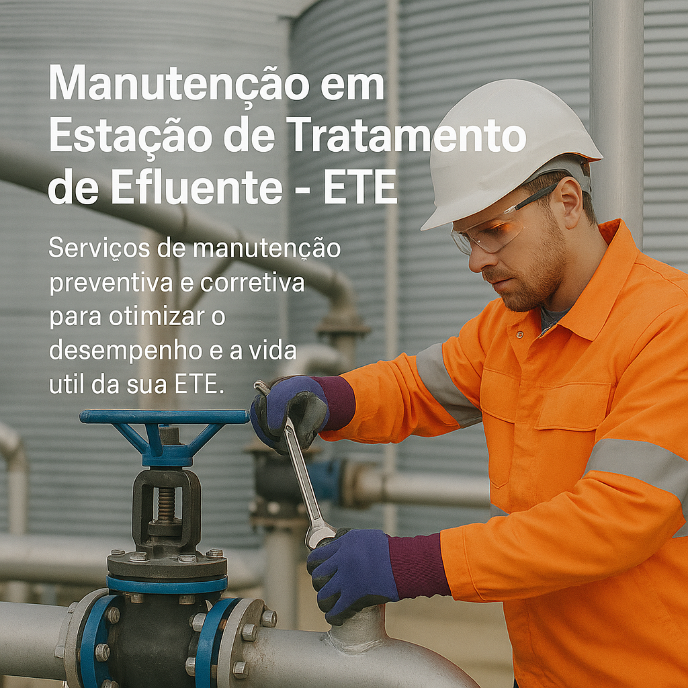

Manutenção em Estação de Tratamento de Efluente - ETE
Garantimos a conformidade ambiental e o alto desempenho da sua ETE com manutenção profissional e eficaz.
Serviços Oferecidos
- Fabricação de ETE (Estação de Tratamento de Efluente): Manutenção preventiva de ETE (Estação de Tratamento de Efluente), Manutenção preventiva e corretiva de ETEI (Estação de Tratamento de Efluente Industrial).
- Reforma de ETE (Estação de Tratamento de Efluentes): Reforma de ETEI (Estação de Tratamento de Efluente industrial).
- LTCAT: Laudo Técnico das Condições Ambientais do Trabalho.
- Fabricação de ETA (Estação de Tratamento de Agua): Outorga/Licenciamento de Poço Artesiano.
- Manutenção e limpeza: Análise fisico-quimica e bacteriológica, Laudo de Potabilidade da Água.